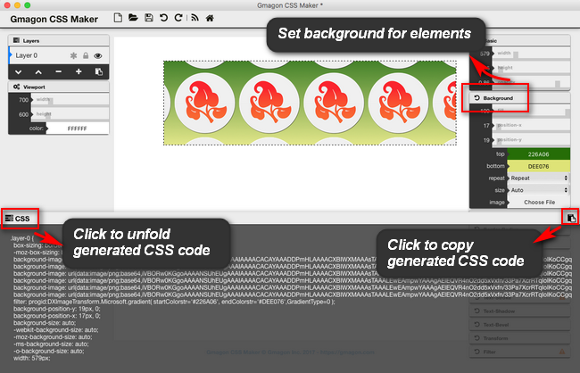

In CSS you can do a lot to style the background behind your content. This article will teach you most of what you’ll ever need to know about styling element backgrounds in CSS. Hopefully you’ll have some fun along the way.
What exactly is a background?
The background of an element is the area that sits underneath an element’s content, padding, and border. The background doesn’t sit underneath the margin – the margin doesn’t count as part of the element’s area, but rather the area outside the element.
The background property in CSS allows you to control the background of any element. It is a shorthand property, which means that it allows you to write what would be multiple CSS properties in one. Like this:
CSS
|
Background basics
Background is made up of eight other properties:
1.background-color: sets a solid color for the background.
Set the background-color of different elements:
|
2.background-image: specifies a background image to appear in the background of the element.
This can be a static file, or a generated gradient.
Set a background-image for the
|
3.background-repeat: specifies whether the background should be repeated (tiled) or not.
Repeat a background-image only vertically:
4.background-position: specifies the position that the background should appear inside the element background.
|
5.background-size: allows a background image to be resized dynamically.
Specify the size of a background image:
6.background-attachment: specifies the behavior of an element’s background when its content scrolls, e.g. does it scroll with the content, or is it fixed?
How to specify a fixed background-image:
7.background-origin: defines where to paint the background: across the whole element, inside the border, or inside the padding.
Let the background image start from the upper left corner of the content:
8.background-clip: controls how far a background image or color extends beyond an element’s padding or content.
Specify the painting area of the background:
For those who are feeling difficult to code CSS style manually, Gmagon CSS Maker is what you need. It helps you create a nice look web page on Mac platform without writing a code. Let’s explore how Gmagon CSS Maker works.
